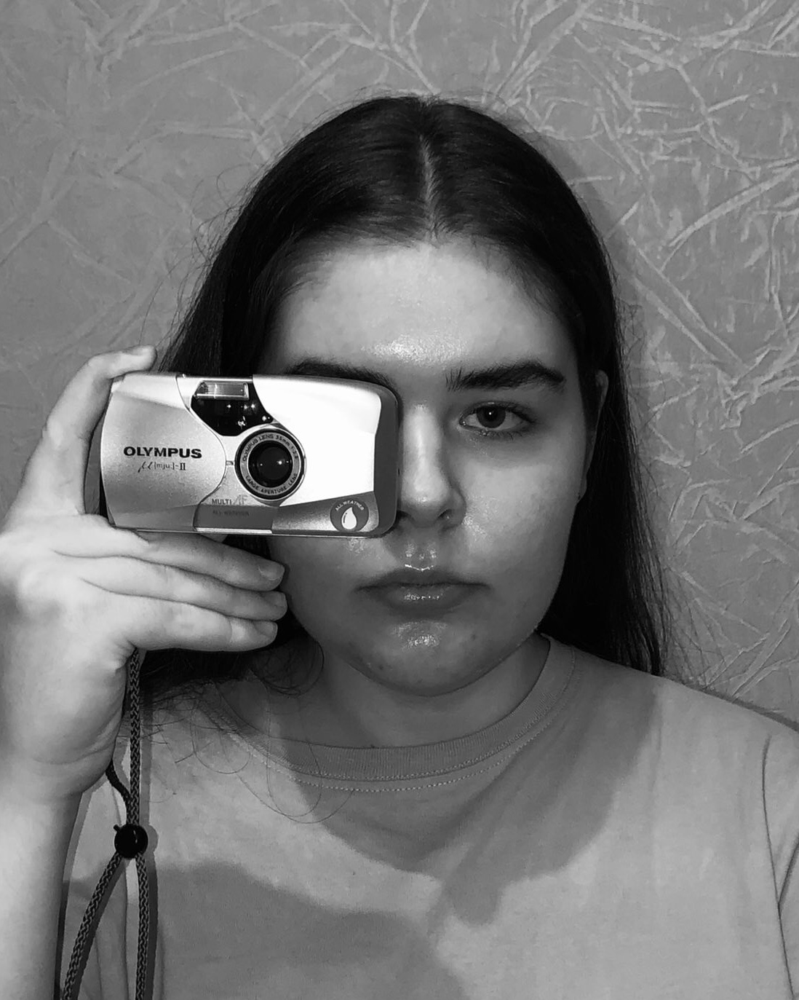

About Anastasiya
ANASTASIYA YAKUBOVICH IS A SOPHOMORE AT LCC INTERNATIONAL UNIVERSITY, IN KLAIPEDA, LITHUANIA, STUDYING CONTEMPORARY COMMUNICATIONS. SHE HAS BEEN EXPERIMENTING WITH PHOTOGRAPHY FOR 5 YEARS NOW, MOSTLY FOCUSING ON FASHION, PORTRAIT, FAMILY, WEDDING, AND BIRTHDAY PHOTOGRAPHY. HOWEVER, SHE DOESN’T LIMIT HERSELF TO ONLY THOSE FIELDS AND IS ALWAYS OPEN TO TRY SOMETHING NEW. HER OBSERVATIVE EYE FOR LIGHT, TEXTURE, AND COLOR COMBINES A PURE COCKTAIL OF CREATIVE VISION MADE THROUGH THE LENSE OF HER CAMERA. A VISION SHE HAS ENJOYED SHARING WITH HER CLIENTS AND AGENCIES.